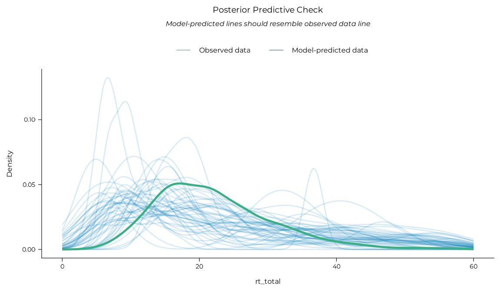
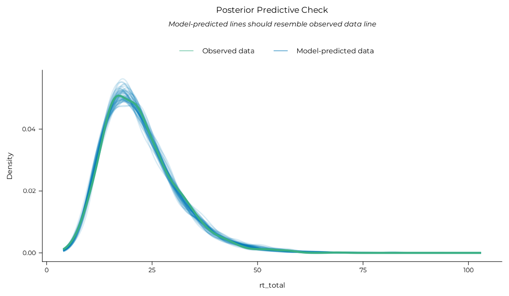
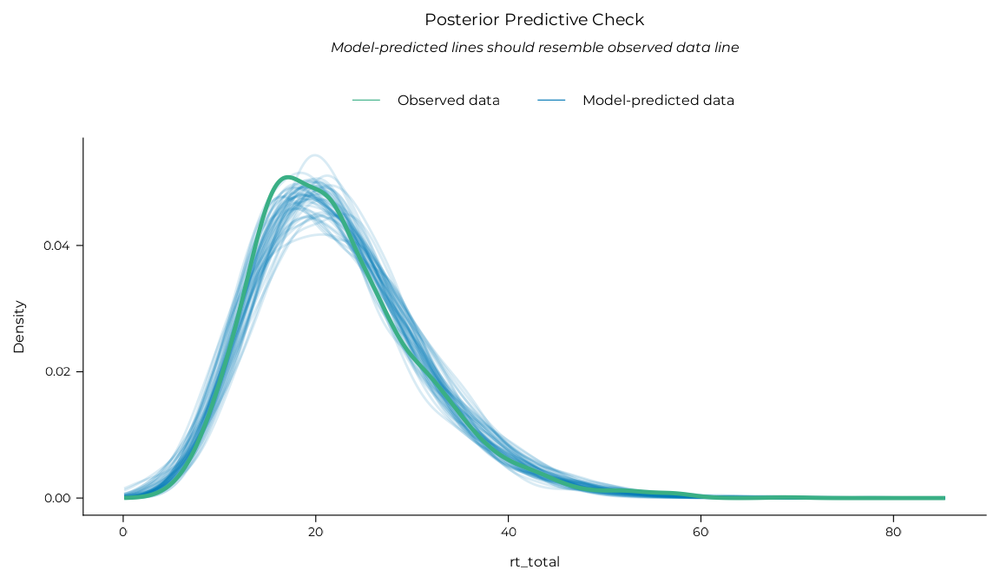
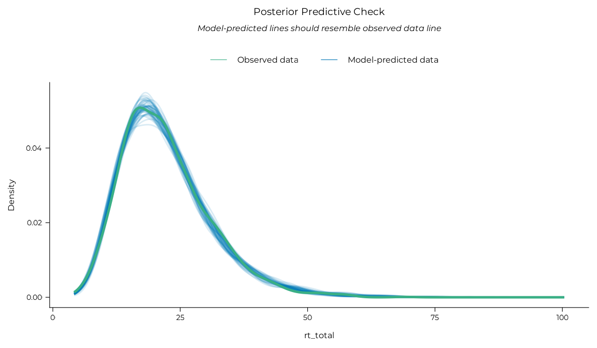
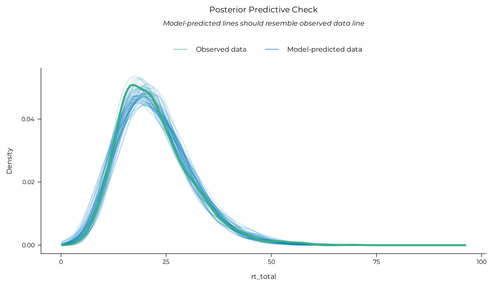
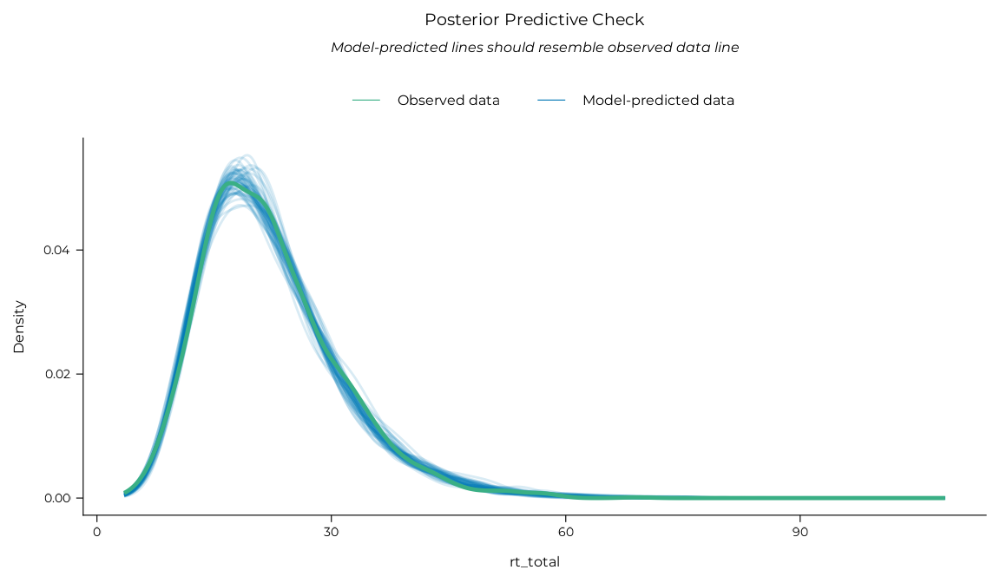
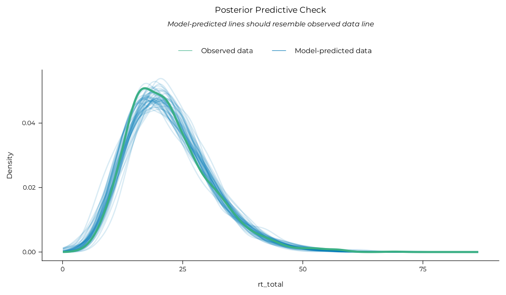
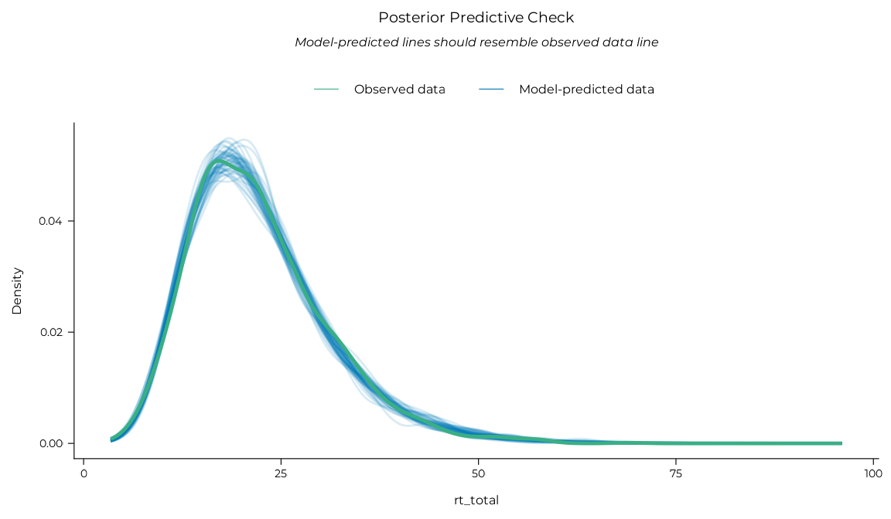
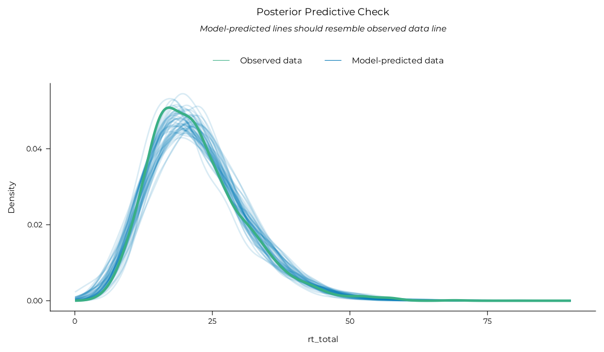
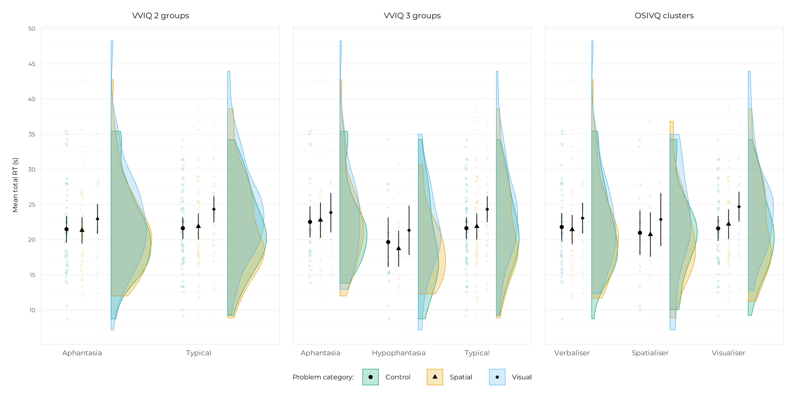

This vignette contains a full breakdown of the analyses of participants’ total response times on the reasoning problems. Only Bayesian analyses were reported in the manuscript for brevity, but equivalent frequentist analyses were also conducted to test the convergence of the two approaches on similar results. They are reported in this vignette alongside the Bayesian analyses for completeness.
library(aphantasiaReasoningViie)
#> Welcome to aphantasiaReasoningViie.
#> See https://osf.io/hfbcp/ for the associated study.Data preparation
First, let’s get the clean, analysis-ready and clustered data (see
vignette("preparing_data") and
vignette("osivq_clusters") for details). For RT analyses,
we removed incorrect trials and trials with suspicious RT patterns.
These filtering steps were gathered in the
filter_trials_on_rt() function, which also provides a short
summary of the process.
df_rt <-
get_clustered_data("experiment") |>
filter_trials_on_rt(verbose = TRUE) |>
dplyr::select(id, group_4:strategy_group, problem, category, rt_total)
#>
#> Outlier trials filtration summary
#> 2808 trials before filtering
#> 587 incorrect trials removed (20.9%)
#> 317 trials filtered based on mean + 2 * SD
#> (14.27% of remaining trials)
#> 1904 trials remaining after filtering
dplyr::glimpse(df_rt)
#> Rows: 1,904
#> Columns: 9
#> $ id <fct> acdn247721443631359lzxb, acdn247721443631359lzxb, acdn2…
#> $ group_4 <fct> Typical, Typical, Typical, Typical, Typical, Typical, T…
#> $ cluster <fct> Visualiser, Visualiser, Visualiser, Visualiser, Visuali…
#> $ group_2 <fct> Typical, Typical, Typical, Typical, Typical, Typical, T…
#> $ group_3 <fct> Typical, Typical, Typical, Typical, Typical, Typical, T…
#> $ strategy_group <fct> No_visual_strategy, No_visual_strategy, No_visual_strat…
#> $ problem <int> 25, 1, 6, 9, 8, 5, 14, 17, 21, 12, 24, 3, 7, 22, 16, 4,…
#> $ category <fct> Control, Visual, Visual, Visual, Visual, Visual, Spatia…
#> $ rt_total <dbl> 18.924, 21.771, 21.817, 20.505, 27.169, 22.155, 26.500,…Method
We fitted hierarchical linear models (also said “multilevel” or “mixed” models) with skewed families of distributions to account for the typically skewed distributions of RTs, using the brms package for Bayesian models (Bürkner, 2017) or the glmmTMB package for frequentist models (McGillycuddy et al., 2025). The models included a grouping variable (VVIQ groups, OSIVQ clusters), Category (visual, spatial, or control) along with their two-way interactions as fixed categorical predictors. Varying slopes and intercepts (“random effects”) have been added for each participant by category along with an intercept for each problem.
Let’s break this down.
Grouping variables
We used several grouping variables to classify participants, all of
which are in the df_rt data frame:
group_4is the 4-group VVIQ classification with an “aphantasia” group (VVIQ = 16), “hypophantasia” group (VVIQ [17, 32]), “typical” group (VVIQ [33, 74]), and “hyperphantasia” group (VVIQ [75, 80]). It was not used in the analyses because the hyperphantasia group was too small (N = 4).group_3is the same asgroup, but with the hyperphantasia group merged with the typical group. It is referred to as “VVIQ 3 groups” in the manuscript results.group_2is the binary classification often used in aphantasia literature that additionally merges the hypophantasia group with the aphantasia group. It is refereed to as “VVIQ 2 groups” in the manuscript results.clusteris the cognitive style classification obtained from clustering OSIVQ scores. It contains three groups: “Visualiser”, “Spatialiser”, and “Verbaliser”. It is referred to as “OSIVQ 3 clusters” in the manuscript results.strategy_groupis a classification based on the self-reported strategies used by the participants to solve the problems. It focuses on whether participants used a visual mental imagery strategy and contains two groups: “Visual strategy user” and “No visual strategy”. It is not reported in the manuscript because it was suggested to us after submission by colleagues at a conference.
The same modelling pipeline was therefore applied four times, once for each of the last four grouping variables.
Model formula
We created a small build_formula() helper function to
write the formula easily, as we used the same model structure a lot of
times:
build_formula("rt_total", "group_2")
#> rt_total ~ group_2 * category + (category | id) + (1 | problem)
#> <environment: 0x5638eac9e7f0>
build_formula("rt_total", "cluster")
#> rt_total ~ cluster * category + (category | id) + (1 | problem)
#> <environment: 0x5638eaf036c0>Bayesian models
Bayesian models were fitted using the brms::brm()
function through a custom wrapper, fit_brms_model(), that
sets several default options for us. 24000 post-warmup iterations were
spread across all available CPU for parallel processing1, with 2000 additional
warmup iterations per chain. A fixed seed was used for reproducibility.
The CmdStanR back-end was
used for better performance. CmdStanR needs a special installation
command which is provided in the next chunk if needed. Regularising
priors coefficients were used to improve convergence and avoid
overfitting. A normal prior of mean 3 and standard deviation 0.05 was
used on the intercept (on the log scale of RTs), a normal prior with
mean 0 and standard deviation 1 was used on the fixed effects, an
exponential prior with rate 10 on the standard deviation of the random
effects, and an exponential prior with rate 10 on the residual standard
deviation. The fine tuning of these priors was done based on prior
predictive checks, which is presented below. To avoid having to refit
the models each time the vignette is built and improve reproducibility,
fitted models are saved in the vignettes/models folder and
loaded in the R chunks.
After model fit, we checked for potential singularity issues and
model performance using the get_singularity() and
get_performance() functions created for the occasion (which
are convenient wrappers around the performance package).
Posterior predictive checks were also performed with the
performance::check_predictions() function to check that the
models were able to reproduce the data well.
Finally, we tested our hypotheses with marginal contrasts. This task
was performed with functions from the marginaleffects package.
We used the marginaleffects::avg_comparisons() function to
compute contrasts and a custom report_rope() wrapper
(around marginaleffects::posterior_draws(),
bayestestR::rope_range() and
bayestestR::p_direction()) to summarise their posterior
distributions. We computed the probability of direction (PD) of the
contrasts and the proportions of their posterior distributions below,
inside or above a region of practical equivalence to the null (ROPE)
(see Makowski et al., 2019). We computed
accuracy contrasts between groups, contrasts between categories within
each group, and interaction contrasts (differences in category contrasts
between groups).
The setup of the CmdStanR back-end, marginaleffects options and the RT model priors is done in the chunk below.
# if(!requireNamespace("cmdstanr", quietly = TRUE)) {
# install.packages(
# "cmdstanr",
# repos = c('https://stan-dev.r-universe.dev', getOption("repos"))
# )
# }
options("marginaleffects_safe" = FALSE)
draws <- seq(1, 4000, 1) # To limit draws that will be used for marginaleffects
prior_rt <- c(
brms::prior(normal(3, 0.05), class = "Intercept"),
brms::prior(normal(0, 1), class = "b"),
brms::prior(exponential(10), class = "sd"),
brms::prior(exponential(10), class = "sigma")
)Prior predictive check were performed to ensure that the priors set on the RT models were adequate. This was done by fitting a model with the same structure as the planned analyses but sampling only from the prior distributions. The posterior predictive distributions of this prior-only model were then plotted to check that they covered a reasonable range of RT values.
mb_rt_prior <-
fit_brms_model(
formula = build_formula("rt_total", "group_2"),
data = df_rt,
family = brms::shifted_lognormal(),
prior = prior_rt,
sample_prior = "only",
iterations = 5000,
file = "models/m_rt_prior.rds"
)
performance::check_predictions(mb_rt_prior) |>
plot() +
ggplot2::scale_x_continuous(limits = c(0, 60)) +
theme_pdf(base_size = 12)
Frequentist models
Frequentist models were fitted using the
glmmTMB::glmmTMB() function (and a little
set_ranef_prior() helper function to set a weakly
informative prior on the random effects, which helps with convergence
and singularity issues). After model fit, we checked for potential
singularity issues and model performance using the
get_singularity() and get_performance()
functions.
Finally, we tested our hypotheses with marginal contrasts. This task
was performed with the report_contrast() function, which is
a wrapper around several functions from the emmeans package2. We
computed accuracy contrasts between groups, contrasts between categories
within each group, and interaction contrasts (differences in category
contrasts between groups).
Here we go!
Results
VVIQ 2 groups
Bayesian
mb_rt_vviq_2 <-
fit_brms_model(
formula = build_formula("rt_total", "group_2"),
data = df_rt,
family = brms::shifted_lognormal(),
prior = prior_rt,
file = "models/m_rt_vviq_2.rds"
)
# Singularity check
mb_rt_vviq_2 |> get_singularity()
# Model performance indices
mb_rt_vviq_2 |>
get_performance(metrics = c("WAIC", "R2", "RMSE")) |>
knitr::kable(align = "c")| WAIC | R2 | R2 (marg.) | RMSE |
|---|---|---|---|
| 12104.6 | 0.510 | 0.020 | 5.865 |
# Posterior predictive check (best model performance indicator)
mb_rt_vviq_2 |>
performance::check_predictions() |> plot() + theme_pdf(base_size = 12)
# Group contrasts
mb_rt_vviq_2 |>
marginaleffects::avg_comparisons(
variables = list("group_2" = "pairwise"),
draw_ids = draws
) |>
report_rope(contrast) |> knitr::kable()| contrast | Estimate | 95% CI | PD | Below ROPE | Inside ROPE | Above ROPE |
|---|---|---|---|---|---|---|
| Typical - Aphantasia | 0.618 | [-1.89, 3.116] | 0.695 | 0.114 | 0.466 | 0.419 |
# Category contrasts within groups
mb_rt_vviq_2 |>
marginaleffects::avg_comparisons(
variables = list("category" = "pairwise"), by = "group_2",
draw_ids = draws
) |>
report_rope(group_2, contrast) |> knitr::kable()| group_2 | contrast | Estimate | 95% CI | PD | Below ROPE | Inside ROPE | Above ROPE |
|---|---|---|---|---|---|---|---|
| Aphantasia | Spatial - Control | -0.068 | [-1.96, 1.703] | 0.535 | 0.189 | 0.668 | 0.143 |
| Aphantasia | Visual - Control | 1.678 | [-0.153, 3.569] | 0.961 | 0.005 | 0.190 | 0.805 |
| Aphantasia | Visual - Spatial | 1.753 | [-0.1, 3.678] | 0.965 | 0.005 | 0.174 | 0.821 |
| Typical | Spatial - Control | 0.121 | [-1.821, 1.964] | 0.548 | 0.146 | 0.652 | 0.202 |
| Typical | Visual - Control | 2.432 | [0.478, 4.307] | 0.992 | 0.001 | 0.055 | 0.944 |
| Typical | Visual - Spatial | 2.338 | [0.336, 4.322] | 0.989 | 0.001 | 0.068 | 0.931 |
# Interaction contrasts
mb_rt_vviq_2 |>
marginaleffects::avg_comparisons(
variables = list("category" = "pairwise"),
by = "group_2",
hypothesis = ~revpairwise, # for the interaction
draw_ids = draws
) |>
report_rope(hypothesis) |> knitr::kable()| Category contrast | Grouping contrast | Estimate | 95% CI | PD | Below ROPE | Inside ROPE | Above ROPE |
|---|---|---|---|---|---|---|---|
| Spatial - Control | Aphantasia - Typical | -0.181 | [-1.484, 1.085] | 0.611 | 0.146 | 0.803 | 0.051 |
| Visual - Control | Aphantasia - Typical | -0.764 | [-2.144, 0.617] | 0.857 | 0.438 | 0.552 | 0.010 |
| Visual - Spatial | Aphantasia - Typical | -0.590 | [-1.915, 0.781] | 0.793 | 0.335 | 0.645 | 0.020 |
Frequentist
mf_rt_vviq_2 <-
glmmTMB::glmmTMB(
data = df_rt,
formula = build_formula("rt_total", "group_2"),
family = Gamma(link = "identity"),
prior = set_ranef_prior(70)
)
# Singularity check
mf_rt_vviq_2 |> get_singularity()
# Model performance indices
mf_rt_vviq_2 |>
get_performance(metrics = c("AICc", "R2", "RMSE")) |>
knitr::kable(align = "c")| AICc | R2 (cond.) | R2 (marg.) | RMSE |
|---|---|---|---|
| 12471.8 | 0.998 | 0.028 | 5.904 |
# Posterior predictive check (best model performance indicator)
mf_rt_vviq_2 |>
performance::check_predictions() |> plot() + theme_pdf(base_size = 12)
# Group contrasts
mf_rt_vviq_2 |> report_contrast(~ group_2) |> knitr::kable()| Contrast | Difference | 95% CI | p.value |
|---|---|---|---|
| Typical - Aphantasia | 0.67 | [-1.66, 3] | 0.572 |
# Category contrasts within groups
mf_rt_vviq_2 |> report_contrast(~ category | group_2) |> knitr::kable()| Contrast | group_2 | Difference | 95% CI | p.value |
|---|---|---|---|---|
| Spatial - Control | Aphantasia | 0.046 | [-1.95, 2.04] | 0.998 |
| Visual - Control | Aphantasia | 1.653 | [-0.32, 3.62] | 0.121 |
| Visual - Spatial | Aphantasia | 1.607 | [-0.6, 3.81] | 0.202 |
| Spatial - Control | Typical | -0.020 | [-1.95, 1.91] | 1.000 |
| Visual - Control | Typical | 2.417 | [0.49, 4.34] | 0.009 |
| Visual - Spatial | Typical | 2.436 | [0.31, 4.56] | 0.020 |
# Interaction contrasts
mf_rt_vviq_2 |> report_contrast(~ category * group_2, interaction = TRUE) |>
knitr::kable()| category_revpairwise | group_2_revpairwise | Difference | 95% CI | p.value |
|---|---|---|---|---|
| Spatial - Control | Typical - Aphantasia | -0.065 | [-1.44, 1.31] | 0.926 |
| Visual - Control | Typical - Aphantasia | 0.764 | [-0.57, 2.1] | 0.261 |
| Visual - Spatial | Typical - Aphantasia | 0.829 | [-0.92, 2.58] | 0.354 |
VVIQ 3 groups
Bayesian
mb_rt_vviq_3 <-
fit_brms_model(
formula = build_formula("rt_total", "group_3"),
data = df_rt,
family = brms::shifted_lognormal(),
prior = prior_rt,
file = "models/m_rt_vviq_3.rds"
)
# Singularity check
mb_rt_vviq_3 |> get_singularity()
# Model performance indices
mb_rt_vviq_3 |>
get_performance(metrics = c("WAIC", "R2", "RMSE")) |>
knitr::kable(align = "c")| WAIC | R2 | R2 (marg.) | RMSE |
|---|---|---|---|
| 12106.0 | 0.511 | 0.037 | 5.860 |
# Posterior predictive check (best model performance indicator)
mb_rt_vviq_3 |>
performance::check_predictions() |> plot() + theme_pdf(base_size = 12)
# Group contrasts
mb_rt_vviq_3 |>
marginaleffects::avg_comparisons(
variables = list("group_3" = "revpairwise"),
draw_ids = draws
) |>
report_rope(contrast) |> knitr::kable()| contrast | Estimate | 95% CI | PD | Below ROPE | Inside ROPE | Above ROPE |
|---|---|---|---|---|---|---|
| Aphantasia - Hypophantasia | 3.437 | [-0.359, 7.012] | 0.963 | 0.015 | 0.070 | 0.916 |
| Aphantasia - Typical | 0.691 | [-2.051, 3.562] | 0.691 | 0.124 | 0.430 | 0.446 |
| Hypophantasia - Typical | -2.762 | [-5.874, 0.722] | 0.944 | 0.871 | 0.108 | 0.021 |
# Category contrasts within groups
mb_rt_vviq_3 |>
marginaleffects::avg_comparisons(
variables = list("category" = "pairwise"),
by = "group_3",
draw_ids = draws
) |>
report_rope(group_3, contrast) |> knitr::kable()| group_3 | contrast | Estimate | 95% CI | PD | Below ROPE | Inside ROPE | Above ROPE |
|---|---|---|---|---|---|---|---|
| Aphantasia | Spatial - Control | 0.203 | [-1.826, 2.31] | 0.582 | 0.140 | 0.598 | 0.262 |
| Aphantasia | Visual - Control | 1.518 | [-0.628, 3.745] | 0.923 | 0.015 | 0.250 | 0.735 |
| Aphantasia | Visual - Spatial | 1.317 | [-0.815, 3.374] | 0.890 | 0.022 | 0.314 | 0.664 |
| Hypophantasia | Spatial - Control | -0.622 | [-2.636, 1.5] | 0.731 | 0.403 | 0.521 | 0.076 |
| Hypophantasia | Visual - Control | 1.963 | [-0.235, 4.162] | 0.962 | 0.007 | 0.162 | 0.832 |
| Hypophantasia | Visual - Spatial | 2.557 | [0.434, 4.719] | 0.988 | 0.001 | 0.060 | 0.939 |
| Typical | Spatial - Control | 0.098 | [-1.731, 1.948] | 0.544 | 0.142 | 0.650 | 0.208 |
| Typical | Visual - Control | 2.458 | [0.438, 4.434] | 0.991 | 0.001 | 0.055 | 0.944 |
| Typical | Visual - Spatial | 2.329 | [0.444, 4.201] | 0.992 | 0.001 | 0.058 | 0.941 |
# Interaction contrasts
mb_rt_vviq_3 |>
marginaleffects::avg_comparisons(
variables = list("category" = "pairwise"),
by = "group_3",
hypothesis = ~revpairwise, # for the interaction
draw_ids = draws
) |>
report_rope(hypothesis) |> knitr::kable()| Category contrast | Grouping contrast | Estimate | 95% CI | PD | Below ROPE | Inside ROPE | Above ROPE |
|---|---|---|---|---|---|---|---|
| Spatial - Control | Aphantasia - Hypophantasia | 0.849 | [-1.119, 2.728] | 0.793 | 0.044 | 0.462 | 0.494 |
| Visual - Control | Aphantasia - Hypophantasia | -0.415 | [-2.514, 1.66] | 0.656 | 0.327 | 0.568 | 0.104 |
| Visual - Spatial | Aphantasia - Hypophantasia | -1.255 | [-3.29, 0.816] | 0.884 | 0.649 | 0.328 | 0.023 |
| Spatial - Control | Aphantasia - Typical | 0.106 | [-1.4, 1.593] | 0.555 | 0.106 | 0.732 | 0.162 |
| Visual - Control | Aphantasia - Typical | -0.905 | [-2.505, 0.69] | 0.874 | 0.516 | 0.469 | 0.016 |
| Visual - Spatial | Aphantasia - Typical | -1.044 | [-2.597, 0.594] | 0.890 | 0.586 | 0.402 | 0.013 |
| Spatial - Control | Hypophantasia - Typical | -0.717 | [-2.481, 0.977] | 0.793 | 0.433 | 0.533 | 0.034 |
| Visual - Control | Hypophantasia - Typical | -0.510 | [-2.348, 1.296] | 0.701 | 0.350 | 0.579 | 0.071 |
| Visual - Spatial | Hypophantasia - Typical | 0.233 | [-1.604, 2.081] | 0.598 | 0.125 | 0.629 | 0.246 |
Frequentist
mf_rt_vviq_3 <-
glmmTMB::glmmTMB(
data = df_rt,
formula = build_formula("rt_total", "group_3"),
family = Gamma(link = "identity"),
prior = set_ranef_prior(70)
)
# Singularity check
mf_rt_vviq_3 |> get_singularity()
# Model performance indices
mf_rt_vviq_3 |>
get_performance(metrics = c("AICc", "R2", "RMSE")) |>
knitr::kable(align = "c")| AICc | R2 (cond.) | R2 (marg.) | RMSE |
|---|---|---|---|
| 12473.5 | 0.998 | 0.054 | 5.903 |
# Posterior predictive check (best model performance indicator)
mf_rt_vviq_3 |>
performance::check_predictions() |> plot() + theme_pdf(base_size = 12)
mf_rt_vviq_3 |> report_contrast(~ group_3) |> knitr::kable()| Contrast | Difference | 95% CI | p.value |
|---|---|---|---|
| Hypophantasia - Aphantasia | -3.138 | [-7.35, 1.07] | 0.188 |
| Typical - Aphantasia | -0.475 | [-3.62, 2.67] | 0.933 |
| Typical - Hypophantasia | 2.662 | [-1.17, 6.49] | 0.233 |
mf_rt_vviq_3 |> report_contrast(~ category | group_3) |> knitr::kable()| Contrast | group_3 | Difference | 95% CI | p.value |
|---|---|---|---|---|
| Spatial - Control | Aphantasia | 0.020 | [-2.22, 2.26] | 1.000 |
| Visual - Control | Aphantasia | 1.278 | [-0.91, 3.47] | 0.357 |
| Visual - Spatial | Aphantasia | 1.258 | [-1.27, 3.78] | 0.473 |
| Spatial - Control | Hypophantasia | 0.057 | [-2.42, 2.53] | 0.998 |
| Visual - Control | Hypophantasia | 2.255 | [-0.16, 4.67] | 0.073 |
| Visual - Spatial | Hypophantasia | 2.198 | [-0.72, 5.12] | 0.182 |
| Spatial - Control | Typical | -0.010 | [-1.94, 1.92] | 1.000 |
| Visual - Control | Typical | 2.446 | [0.52, 4.37] | 0.008 |
| Visual - Spatial | Typical | 2.456 | [0.33, 4.58] | 0.019 |
mf_rt_vviq_3 |> report_contrast(~ category * group_3, interaction = TRUE) |>
knitr::kable()| category_revpairwise | group_3_revpairwise | Difference | 95% CI | p.value |
|---|---|---|---|---|
| Spatial - Control | Hypophantasia - Aphantasia | 0.037 | [-2.04, 2.12] | 0.972 |
| Visual - Control | Hypophantasia - Aphantasia | 0.976 | [-0.99, 2.94] | 0.331 |
| Visual - Spatial | Hypophantasia - Aphantasia | 0.940 | [-1.69, 3.57] | 0.484 |
| Spatial - Control | Typical - Aphantasia | -0.031 | [-1.65, 1.59] | 0.971 |
| Visual - Control | Typical - Aphantasia | 1.167 | [-0.38, 2.72] | 0.140 |
| Visual - Spatial | Typical - Aphantasia | 1.198 | [-0.83, 3.23] | 0.248 |
| Spatial - Control | Typical - Hypophantasia | -0.067 | [-1.92, 1.79] | 0.943 |
| Visual - Control | Typical - Hypophantasia | 0.191 | [-1.58, 1.96] | 0.833 |
| Visual - Spatial | Typical - Hypophantasia | 0.258 | [-2.12, 2.64] | 0.832 |
OSIVQ 3 clusters
Bayesian
mb_rt_osivq <-
fit_brms_model(
formula = build_formula("rt_total", "cluster"),
data = df_rt,
family = brms::shifted_lognormal(),
prior = prior_rt,
file = "models/m_rt_cluster.rds"
)
# Singularity check
mb_rt_osivq |> get_singularity()
# Model performance indices
mb_rt_osivq |>
get_performance(metrics = c("WAIC", "R2", "RMSE")) |>
knitr::kable(align = "c")| WAIC | R2 | R2 (marg.) | RMSE |
|---|---|---|---|
| 12105.0 | 0.511 | 0.028 | 5.864 |
# Posterior predictive check (best model performance indicator)
mb_rt_osivq |>
performance::check_predictions() |> plot() + theme_pdf(base_size = 12)
# Group contrasts
mb_rt_osivq |>
marginaleffects::avg_comparisons(
variables = list("cluster" = "pairwise"),
draw_ids = draws
) |>
report_rope(contrast) |> knitr::kable()| contrast | Estimate | 95% CI | PD | Below ROPE | Inside ROPE | Above ROPE |
|---|---|---|---|---|---|---|
| Spatialiser - Visualiser | -1.545 | [-4.73, 1.885] | 0.819 | 0.648 | 0.268 | 0.084 |
| Verbaliser - Spatialiser | 0.720 | [-2.761, 3.8] | 0.664 | 0.182 | 0.349 | 0.469 |
| Verbaliser - Visualiser | -0.817 | [-3.581, 1.939] | 0.722 | 0.485 | 0.398 | 0.116 |
# Category contrasts within groups
mb_rt_osivq |>
marginaleffects::avg_comparisons(
variables = list("category" = "pairwise"),
by = "cluster",
draw_ids = draws
) |>
report_rope(cluster, contrast) |> knitr::kable()| cluster | contrast | Estimate | 95% CI | PD | Below ROPE | Inside ROPE | Above ROPE |
|---|---|---|---|---|---|---|---|
| Visualiser | Spatial - Control | 0.352 | [-1.56, 2.336] | 0.643 | 0.106 | 0.595 | 0.299 |
| Visualiser | Visual - Control | 2.895 | [0.949, 4.911] | 0.998 | 0.000 | 0.023 | 0.977 |
| Visualiser | Visual - Spatial | 2.518 | [0.53, 4.689] | 0.991 | 0.001 | 0.049 | 0.950 |
| Spatialiser | Spatial - Control | -0.154 | [-2.205, 1.983] | 0.558 | 0.258 | 0.566 | 0.176 |
| Spatialiser | Visual - Control | 1.481 | [-0.747, 3.695] | 0.907 | 0.020 | 0.271 | 0.709 |
| Spatialiser | Visual - Spatial | 1.620 | [-0.529, 3.884] | 0.929 | 0.012 | 0.238 | 0.750 |
| Verbaliser | Spatial - Control | -0.278 | [-2.131, 1.668] | 0.616 | 0.252 | 0.628 | 0.120 |
| Verbaliser | Visual - Control | 1.556 | [-0.414, 3.456] | 0.948 | 0.005 | 0.240 | 0.755 |
| Verbaliser | Visual - Spatial | 1.804 | [-0.031, 3.728] | 0.973 | 0.003 | 0.165 | 0.832 |
# Interaction contrasts
mb_rt_osivq |>
marginaleffects::avg_comparisons(
variables = list("category" = "pairwise"),
by = "cluster",
hypothesis = ~revpairwise, # for the interaction
draw_ids = draws
) |>
report_rope(hypothesis) |> knitr::kable()| Category contrast | Grouping contrast | Estimate | 95% CI | PD | Below ROPE | Inside ROPE | Above ROPE |
|---|---|---|---|---|---|---|---|
| Spatial - Control | Spatialiser - Verbaliser | 0.110 | [-1.718, 1.892] | 0.550 | 0.145 | 0.649 | 0.206 |
| Visual - Control | Spatialiser - Verbaliser | -0.088 | [-1.928, 1.881] | 0.532 | 0.209 | 0.624 | 0.168 |
| Visual - Spatial | Spatialiser - Verbaliser | -0.190 | [-1.987, 1.731] | 0.572 | 0.242 | 0.620 | 0.138 |
| Spatial - Control | Visualiser - Spatialiser | 0.506 | [-1.303, 2.29] | 0.704 | 0.073 | 0.568 | 0.359 |
| Visual - Control | Visualiser - Spatialiser | 1.442 | [-0.484, 3.3] | 0.924 | 0.010 | 0.273 | 0.717 |
| Visual - Spatial | Visualiser - Spatialiser | 0.933 | [-1.01, 2.869] | 0.828 | 0.036 | 0.440 | 0.524 |
| Spatial - Control | Visualiser - Verbaliser | 0.614 | [-0.821, 2.054] | 0.787 | 0.021 | 0.612 | 0.367 |
| Visual - Control | Visualiser - Verbaliser | 1.374 | [-0.151, 2.864] | 0.962 | 0.002 | 0.255 | 0.743 |
| Visual - Spatial | Visualiser - Verbaliser | 0.739 | [-0.778, 2.28] | 0.831 | 0.018 | 0.546 | 0.435 |
Frequentist
mf_rt_osivq <-
glmmTMB::glmmTMB(
data = df_rt,
formula = build_formula("rt_total", "cluster"),
family = Gamma(link = "identity"),
prior = set_ranef_prior(70)
)
# Singularity check
mf_rt_osivq |> get_singularity()
# Model performance indices
mf_rt_osivq |>
get_performance(metrics = c("AICc", "R2", "RMSE")) |>
knitr::kable(align = "c")| AICc | R2 (cond.) | R2 (marg.) | RMSE |
|---|---|---|---|
| 12474.7 | 0.998 | 0.033 | 5.902 |
# Posterior predictive check (best model performance indicator)
mf_rt_osivq |>
performance::check_predictions() |> plot() + theme_pdf(base_size = 12)
mf_rt_osivq |> report_contrast(~ cluster) |> knitr::kable()| Contrast | Difference | 95% CI | p.value |
|---|---|---|---|
| Spatialiser - Visualiser | -1.326 | [-5.21, 2.55] | 0.702 |
| Verbaliser - Visualiser | -0.719 | [-3.78, 2.34] | 0.846 |
| Verbaliser - Spatialiser | 0.607 | [-3.29, 4.5] | 0.929 |
mf_rt_osivq |> report_contrast(~ category | cluster) |> knitr::kable()| Contrast | Cluster | Difference | 95% CI | p.value |
|---|---|---|---|---|
| Spatial - Control | Visualiser | 0.295 | [-1.76, 2.35] | 0.939 |
| Visual - Control | Visualiser | 2.904 | [0.88, 4.93] | 0.002 |
| Visual - Spatial | Visualiser | 2.609 | [0.33, 4.89] | 0.020 |
| Spatial - Control | Spatialiser | -0.236 | [-2.69, 2.22] | 0.972 |
| Visual - Control | Spatialiser | 1.344 | [-1.04, 3.73] | 0.384 |
| Visual - Spatial | Spatialiser | 1.581 | [-1.27, 4.43] | 0.396 |
| Spatial - Control | Verbaliser | -0.179 | [-2.23, 1.87] | 0.977 |
| Visual - Control | Verbaliser | 1.515 | [-0.49, 3.52] | 0.180 |
| Visual - Spatial | Verbaliser | 1.694 | [-0.58, 3.97] | 0.188 |
mf_rt_osivq |> report_contrast(~ category * cluster, interaction = TRUE) |>
knitr::kable()| category_revpairwise | cluster_revpairwise | Difference | 95% CI | p.value |
|---|---|---|---|---|
| Spatial - Control | Spatialiser - Visualiser | -0.532 | [-2.44, 1.37] | 0.584 |
| Visual - Control | Spatialiser - Visualiser | -1.560 | [-3.37, 0.25] | 0.091 |
| Visual - Spatial | Spatialiser - Visualiser | -1.028 | [-3.45, 1.39] | 0.405 |
| Spatial - Control | Verbaliser - Visualiser | -0.474 | [-2.02, 1.07] | 0.548 |
| Visual - Control | Verbaliser - Visualiser | -1.389 | [-2.87, 0.09] | 0.065 |
| Visual - Spatial | Verbaliser - Visualiser | -0.915 | [-2.85, 1.02] | 0.355 |
| Spatial - Control | Verbaliser - Spatialiser | 0.057 | [-1.84, 1.96] | 0.953 |
| Visual - Control | Verbaliser - Spatialiser | 0.171 | [-1.61, 1.95] | 0.851 |
| Visual - Spatial | Verbaliser - Spatialiser | 0.113 | [-2.29, 2.51] | 0.926 |
Strategy groups
Bayesian
mb_rt_strat <-
fit_brms_model(
formula = build_formula("rt_total", "strategy_group"),
data = df_rt,
family = brms::shifted_lognormal(),
prior = prior_rt,
file = "models/m_rt_strat.rds"
)
# Singularity check
mb_rt_strat |> get_singularity()
# Model performance indices
mb_rt_strat |>
get_performance(metrics = c("WAIC", "R2", "RMSE")) |>
knitr::kable(align = "c")| WAIC | R2 | R2 (marg.) | RMSE |
|---|---|---|---|
| 12104.0 | 0.510 | 0.021 | 5.864 |
# Posterior predictive check (best model performance indicator)
mb_rt_strat |>
performance::check_predictions() |> plot() + theme_pdf(base_size = 12)
# Group contrasts
mb_rt_strat |>
marginaleffects::avg_comparisons(
variables = list("strategy_group" = "pairwise"),
draw_ids = draws
) |>
report_rope(contrast) |> knitr::kable()| contrast | Estimate | 95% CI | PD | Below ROPE | Inside ROPE | Above ROPE |
|---|---|---|---|---|---|---|
| No_visual_strategy - Visual_strategy_user | 1.106 | [-1.323, 3.588] | 0.817 | 0.06 | 0.358 | 0.582 |
# Category contrasts within groups
mb_rt_strat |>
marginaleffects::avg_comparisons(
variables = list("category" = "pairwise"),
by = "strategy_group",
draw_ids = draws
) |>
report_rope(strategy_group, contrast) |> knitr::kable()| strategy_group | contrast | Estimate | 95% CI | PD | Below ROPE | Inside ROPE | Above ROPE |
|---|---|---|---|---|---|---|---|
| Visual_strategy_user | Spatial - Control | 0.048 | [-1.715, 1.923] | 0.521 | 0.145 | 0.668 | 0.186 |
| Visual_strategy_user | Visual - Control | 2.488 | [0.622, 4.429] | 0.995 | 0.000 | 0.043 | 0.957 |
| Visual_strategy_user | Visual - Spatial | 2.420 | [0.519, 4.433] | 0.993 | 0.001 | 0.055 | 0.944 |
| No_visual_strategy | Spatial - Control | 0.003 | [-1.831, 1.92] | 0.501 | 0.170 | 0.648 | 0.182 |
| No_visual_strategy | Visual - Control | 1.763 | [-0.158, 3.753] | 0.968 | 0.004 | 0.168 | 0.828 |
| No_visual_strategy | Visual - Spatial | 1.758 | [-0.205, 3.81] | 0.961 | 0.005 | 0.174 | 0.821 |
# Interaction contrasts
mb_rt_strat |>
marginaleffects::avg_comparisons(
variables = list("category" = "pairwise"),
by = "strategy_group",
hypothesis = ~revpairwise, # for the interaction
draw_ids = draws
) |>
report_rope(hypothesis) |> knitr::kable()| Category contrast | Grouping contrast | Estimate | 95% CI | PD | Below ROPE | Inside ROPE | Above ROPE |
|---|---|---|---|---|---|---|---|
| Spatial - Control | Visual_strategy_user - No_visual_strategy | 0.043 | [-1.247, 1.364] | 0.526 | 0.091 | 0.794 | 0.115 |
| Visual - Control | Visual_strategy_user - No_visual_strategy | 0.707 | [-0.674, 2.031] | 0.854 | 0.013 | 0.582 | 0.406 |
| Visual - Spatial | Visual_strategy_user - No_visual_strategy | 0.651 | [-0.719, 2.053] | 0.819 | 0.014 | 0.608 | 0.378 |
Frequentist
mf_rt_strat <-
glmmTMB::glmmTMB(
data = df_rt,
formula = build_formula("rt_total", "strategy_group"),
family = Gamma(link = "identity"),
prior = set_ranef_prior(70)
)
# Singularity check
mf_rt_strat |> get_singularity()
# Model performance indices
mf_rt_strat |>
get_performance(metrics = c("AICc", "R2", "RMSE")) |>
knitr::kable(align = "c")| AICc | R2 (cond.) | R2 (marg.) | RMSE |
|---|---|---|---|
| 12470.6 | 0.998 | 0.030 | 5.902 |
# Posterior predictive check (best model performance indicator)
mf_rt_strat |>
performance::check_predictions() |> plot() + theme_pdf(base_size = 12)
mf_rt_strat |> report_contrast(~ strategy_group) |> knitr::kable()| Contrast | Difference | 95% CI | p.value |
|---|---|---|---|
| No_visual_strategy - Visual_strategy_user | 0.838 | [-1.48, 3.15] | 0.478 |
mf_rt_strat |> report_contrast(~ category | strategy_group) |> knitr::kable()| Contrast | strategy_group | Difference | 95% CI | p.value |
|---|---|---|---|---|
| Spatial - Control | Visualegy_user | 0.059 | [-1.88, 2] | 0.997 |
| Visual - Control | Visualegy_user | 2.534 | [0.6, 4.46] | 0.006 |
| Visual - Spatial | Visualegy_user | 2.475 | [0.33, 4.62] | 0.019 |
| Spatial - Control | No_visualegy | -0.051 | [-2.05, 1.94] | 0.998 |
| Visual - Control | No_visualegy | 1.574 | [-0.4, 3.55] | 0.148 |
| Visual - Spatial | No_visualegy | 1.625 | [-0.57, 3.82] | 0.192 |
mf_rt_strat |> report_contrast(~ category * strategy_group, interaction = TRUE) |>
knitr::kable()| category_revpairwise | strategy_group_revpairwise | Difference | 95% CI | p.value |
|---|---|---|---|---|
| Spatial - Control | No_visualegy - Visualegy_user | -0.11 | [-1.49, 1.27] | 0.876 |
| Visual - Control | No_visualegy - Visualegy_user | -0.96 | [-2.29, 0.37] | 0.158 |
| Visual - Spatial | No_visualegy - Visualegy_user | -0.85 | [-2.6, 0.9] | 0.341 |
Visualisation
The figures showing the distribution of response times displayed in
the manuscript were created with the
plot_superb_raincloud() function from the package, which
wraps functions from the ggplot2 and superb packages
to create nice visualisations easily. A little
add_significance() helper function was also created to add
significance stars to the plots.
library(patchwork)
library(superb)
pr1 <-
plot_superb_raincloud(
df_rt, rt_total, group_2,
title = "VVIQ 2 groups", y_title = "Mean total RT (s)",
base_size = 12,
plot.background = ggplot2::element_rect(fill = "white", colour = NA),
axis_rel_x = 1.2,
exp_add_right = 0.7
) +
add_significance(
size_star = 4,
tibble::tibble(
x_star = 2,
y_star = 30,
stars = "**",
x_line = .data$x_star - 0.14,
x_line_end = .data$x_star + 0.14,
y_line = 29.5
)
) +
add_significance(
size_star = 4,
tibble::tibble(
x_star = 2.07,
y_star = 28,
stars = "*",
x_line = .data$x_star - 0.07,
x_line_end = .data$x_star + 0.07,
y_line = 27.5
)
)
pr2 <-
plot_superb_raincloud(
df_rt, rt_total, group_3,
title = "VVIQ 3 groups", y_title = "Mean total RT (s)",
base_size = 12,
plot.background = ggplot2::element_rect(fill = "white", colour = NA),
axis_rel_x = 1.2,
exp_add_right = 0.7
) +
add_significance(
size_star = 4,
tibble::tibble(
x_star = 3,
y_star = 30,
stars = "**",
x_line = .data$x_star - 0.14,
x_line_end = .data$x_star + 0.14,
y_line = 29.5
)
) +
add_significance(
size_star = 4,
tibble::tibble(
x_star = 3.07,
y_star = 28,
stars = "*",
x_line = .data$x_star - 0.07,
x_line_end = .data$x_star + 0.07,
y_line = 27.5
)
)
pr3 <-
plot_superb_raincloud(
df_rt, rt_total, cluster,
title = "OSIVQ clusters", y_title = "Mean total RT (s)",
base_size = 12,
plot.background = ggplot2::element_rect(fill = "white", colour = NA),
axis_rel_x = 1.2,
exp_add_right = 0.7
) +
add_significance(
size_star = 4,
tibble::tibble(
x_star = 3,
y_star = 30,
stars = "***",
x_line = .data$x_star - 0.14,
x_line_end = .data$x_star + 0.14,
y_line = 29.5
)
) +
add_significance(
size_star = 4,
tibble::tibble(
x_star = 3.07,
y_star = 28,
stars = "*",
x_line = .data$x_star - 0.07,
x_line_end = .data$x_star + 0.07,
y_line = 27.5
)
)
pr <- pr1 + pr2 + pr3 +
patchwork::plot_layout(axes = "collect", guides = "collect") &
ggplot2::theme(legend.position = "bottom")
plot(pr)
All done!
#> ─ Session info ───────────────────────────────────────────────────────────────
#> setting value
#> version R version 4.5.2 (2025-10-31)
#> os Ubuntu 24.04.3 LTS
#> system x86_64, linux-gnu
#> ui X11
#> language en
#> collate C.UTF-8
#> ctype C.UTF-8
#> tz UTC
#> date 2025-12-10
#> pandoc 3.1.11 @ /opt/hostedtoolcache/pandoc/3.1.11/x64/ (via rmarkdown)
#> quarto 1.8.26 @ /usr/local/bin/quarto
#>
#> ─ Packages ───────────────────────────────────────────────────────────────────
#> ! package * version date (UTC) lib source
#> abind 1.4-8 2024-09-12 [1] RSPM
#> aphantasiaReasoningViie * 1.0 2025-12-10 [1] local
#> assertthat 0.2.1 2019-03-21 [1] RSPM
#> backports 1.5.0 2024-05-23 [1] RSPM
#> bayesplot 1.14.0 2025-08-31 [1] RSPM
#> bayestestR 0.17.0 2025-08-29 [1] RSPM
#> P boot 1.3-32 2025-08-29 [?] CRAN (R 4.5.2)
#> bridgesampling 1.2-1 2025-11-19 [1] RSPM
#> brms 2.23.0 2025-09-09 [1] RSPM
#> Brobdingnag 1.2-9 2022-10-19 [1] RSPM
#> bslib 0.9.0 2025-01-30 [1] RSPM
#> cachem 1.1.0 2024-05-16 [1] RSPM
#> checkmate 2.3.3 2025-08-18 [1] RSPM
#> P class 7.3-23 2025-01-01 [?] CRAN (R 4.5.2)
#> cli 3.6.5 2025-04-23 [1] RSPM
#> clue 0.3-66 2024-11-13 [1] RSPM
#> P cluster 2.1.8.1 2025-03-12 [?] CRAN (R 4.5.2)
#> clusterCrit 1.3.0 2023-11-23 [1] RSPM
#> clValid 0.7 2021-02-14 [1] RSPM
#> coda 0.19-4.1 2024-01-31 [1] RSPM
#> P codetools 0.2-20 2024-03-31 [?] CRAN (R 4.5.2)
#> collapse 2.1.5 2025-11-19 [1] RSPM
#> combinat 0.0-8 2012-10-29 [1] RSPM
#> crayon 1.5.3 2024-06-20 [1] RSPM
#> curl 7.0.0 2025-08-19 [1] RSPM
#> data.table 1.17.8 2025-07-10 [1] RSPM
#> datawizard 1.3.0 2025-10-11 [1] RSPM
#> desc 1.4.3 2023-12-10 [1] RSPM
#> P devtools * 2.4.6 2025-10-03 [?] RSPM
#> diceR 3.1.0 2025-06-19 [1] RSPM
#> digest 0.6.39 2025-11-19 [1] RSPM
#> distributional 0.5.0 2024-09-17 [1] RSPM
#> dplyr 1.1.4 2023-11-17 [1] RSPM
#> e1071 1.7-16 2024-09-16 [1] RSPM
#> P ellipsis 0.3.2 2021-04-29 [?] RSPM
#> emmeans 2.0.0 2025-10-29 [1] RSPM
#> estimability 1.5.1 2024-05-12 [1] RSPM
#> evaluate 1.0.5 2025-08-27 [1] RSPM
#> farver 2.1.2 2024-05-13 [1] RSPM
#> fastmap 1.2.0 2024-05-15 [1] RSPM
#> forcats 1.0.1 2025-09-25 [1] RSPM
#> P foreign 0.8-90 2025-03-31 [?] CRAN (R 4.5.2)
#> Formula 1.2-5 2023-02-24 [1] RSPM
#> fs 1.6.6 2025-04-12 [1] RSPM
#> generics 0.1.4 2025-05-09 [1] RSPM
#> ggplot2 4.0.1 2025-11-14 [1] RSPM
#> glmmTMB 1.1.13 2025-10-09 [1] RSPM
#> glue 1.8.0 2024-09-30 [1] RSPM
#> gridExtra 2.3 2017-09-09 [1] RSPM
#> gtable 0.3.6 2024-10-25 [1] RSPM
#> haven 2.5.5 2025-05-30 [1] RSPM
#> highr 0.11 2024-05-26 [1] RSPM
#> hms 1.1.4 2025-10-17 [1] RSPM
#> htmltools 0.5.9 2025-12-04 [1] RSPM
#> htmlwidgets 1.6.4 2023-12-06 [1] RSPM
#> httpuv 1.6.16 2025-04-16 [1] RSPM
#> inline 0.3.21 2025-01-09 [1] RSPM
#> insight 1.4.4 2025-12-06 [1] RSPM
#> jquerylib 0.1.4 2021-04-26 [1] RSPM
#> jsonlite 2.0.0 2025-03-27 [1] RSPM
#> klaR 1.7-3 2023-12-13 [1] RSPM
#> knitr 1.50 2025-03-16 [1] RSPM
#> labeling 0.4.3 2023-08-29 [1] RSPM
#> labelled 2.16.0 2025-10-22 [1] RSPM
#> later 1.4.4 2025-08-27 [1] RSPM
#> P lattice 0.22-7 2025-04-02 [?] CRAN (R 4.5.2)
#> lifecycle 1.0.4 2023-11-07 [1] RSPM
#> lme4 1.1-38 2025-12-02 [1] RSPM
#> loo 2.8.0 2024-07-03 [1] RSPM
#> lsr 0.5.2 2021-12-01 [1] RSPM
#> magrittr 2.0.4 2025-09-12 [1] RSPM
#> marginaleffects 0.31.0 2025-11-15 [1] RSPM
#> P MASS 7.3-65 2025-02-28 [?] CRAN (R 4.5.2)
#> P Matrix 1.7-4 2025-08-28 [?] CRAN (R 4.5.2)
#> matrixStats 1.5.0 2025-01-07 [1] RSPM
#> mclust 6.1.2 2025-10-31 [1] RSPM
#> memoise 2.0.1 2021-11-26 [1] RSPM
#> P mgcv 1.9-3 2025-04-04 [?] CRAN (R 4.5.2)
#> mime 0.13 2025-03-17 [1] RSPM
#> miniUI 0.1.2 2025-04-17 [1] RSPM
#> minqa 1.2.8 2024-08-17 [1] RSPM
#> mvtnorm 1.3-3 2025-01-10 [1] RSPM
#> P nlme 3.1-168 2025-03-31 [?] CRAN (R 4.5.2)
#> nloptr 2.2.1 2025-03-17 [1] RSPM
#> numDeriv 2016.8-1.1 2019-06-06 [1] RSPM
#> otel 0.2.0 2025-08-29 [1] RSPM
#> patchwork * 1.3.2 2025-08-25 [1] RSPM
#> performance 0.15.3 2025-12-01 [1] RSPM
#> pillar 1.11.1 2025-09-17 [1] RSPM
#> pkgbuild 1.4.8 2025-05-26 [1] RSPM
#> pkgconfig 2.0.3 2019-09-22 [1] RSPM
#> pkgdown 2.2.0 2025-11-06 [1] any (@2.2.0)
#> pkgload 1.4.1 2025-09-23 [1] RSPM
#> plyr 1.8.9 2023-10-02 [1] RSPM
#> posterior 1.6.1 2025-02-27 [1] RSPM
#> promises 1.5.0 2025-11-01 [1] RSPM
#> proxy 0.4-27 2022-06-09 [1] RSPM
#> purrr 1.2.0 2025-11-04 [1] RSPM
#> questionr 0.8.1 2025-06-10 [1] RSPM
#> QuickJSR 1.8.1 2025-09-20 [1] RSPM
#> R6 2.6.1 2025-02-15 [1] RSPM
#> ragg 1.5.0 2025-09-02 [1] RSPM
#> rbibutils 2.4 2025-11-07 [1] RSPM
#> RColorBrewer 1.1-3 2022-04-03 [1] RSPM
#> Rcpp 1.1.0 2025-07-02 [1] RSPM
#> RcppParallel 5.1.11-1 2025-08-27 [1] RSPM
#> Rdpack 2.6.4 2025-04-09 [1] RSPM
#> reformulas 0.4.2 2025-10-28 [1] RSPM
#> P remotes 2.5.0 2024-03-17 [?] RSPM
#> renv 1.1.4 2025-03-20 [1] RSPM (R 4.5.0)
#> reshape2 1.4.5 2025-11-12 [1] RSPM
#> rlang 1.1.6 2025-04-11 [1] RSPM
#> rmarkdown 2.30 2025-09-28 [1] RSPM
#> rrapply 1.2.8 2025-11-25 [1] RSPM
#> rstan 2.32.7 2025-03-10 [1] RSPM
#> rstantools 2.5.0 2025-09-01 [1] RSPM
#> rstudioapi 0.17.1 2024-10-22 [1] RSPM
#> S7 0.2.1 2025-11-14 [1] RSPM
#> sandwich 3.1-1 2024-09-15 [1] RSPM
#> sass 0.4.10 2025-04-11 [1] RSPM
#> scales 1.4.0 2025-04-24 [1] RSPM
#> see 0.12.0 2025-09-14 [1] RSPM
#> sessioninfo 1.2.3 2025-02-05 [1] RSPM
#> shiny 1.12.0 2025-12-03 [1] RSPM
#> shinyBS 0.61.1 2022-04-17 [1] RSPM
#> showtext 0.9-7 2024-03-02 [1] RSPM
#> showtextdb 3.0 2020-06-04 [1] RSPM
#> StanHeaders 2.32.10 2024-07-15 [1] RSPM
#> stringi 1.8.7 2025-03-27 [1] RSPM
#> stringr 1.6.0 2025-11-04 [1] RSPM
#> superb * 1.0.1 2025-12-04 [1] RSPM
#> sysfonts 0.8.9 2024-03-02 [1] RSPM
#> systemfonts 1.3.1 2025-10-01 [1] RSPM
#> tensorA 0.36.2.1 2023-12-13 [1] RSPM
#> textshaping 1.0.4 2025-10-10 [1] RSPM
#> tibble 3.3.0 2025-06-08 [1] RSPM
#> tidyr 1.3.1 2024-01-24 [1] RSPM
#> tidyselect 1.2.1 2024-03-11 [1] RSPM
#> TMB 1.9.18 2025-10-13 [1] RSPM
#> P usethis * 3.2.1 2025-09-06 [?] RSPM
#> vctrs 0.6.5 2023-12-01 [1] RSPM
#> withr 3.0.2 2024-10-28 [1] RSPM
#> xfun 0.54 2025-10-30 [1] RSPM
#> xtable 1.8-4 2019-04-21 [1] RSPM
#> yaml 2.3.11 2025-11-28 [1] RSPM
#> zoo 1.8-14 2025-04-10 [1] RSPM
#>
#> [1] /home/runner/.cache/R/renv/library/aphantasiaReasoningViie-b75da44b/linux-ubuntu-noble/R-4.5/x86_64-pc-linux-gnu
#> [2] /home/runner/.cache/R/renv/sandbox/linux-ubuntu-noble/R-4.5/x86_64-pc-linux-gnu/8f3cef43
#>
#> * ── Packages attached to the search path.
#> P ── Loaded and on-disk path mismatch.
#>
#> ──────────────────────────────────────────────────────────────────────────────